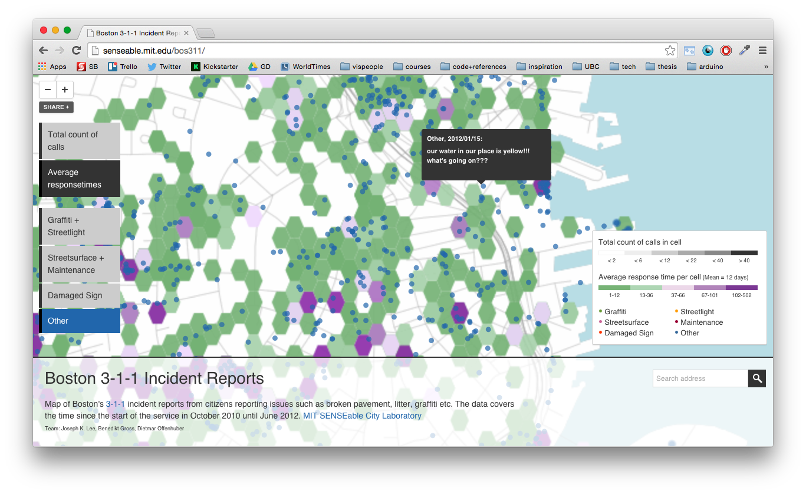
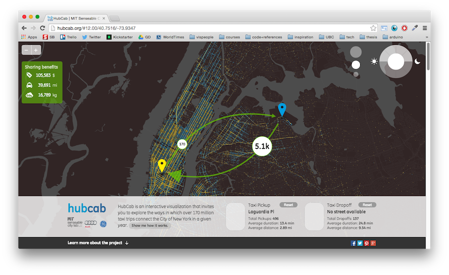
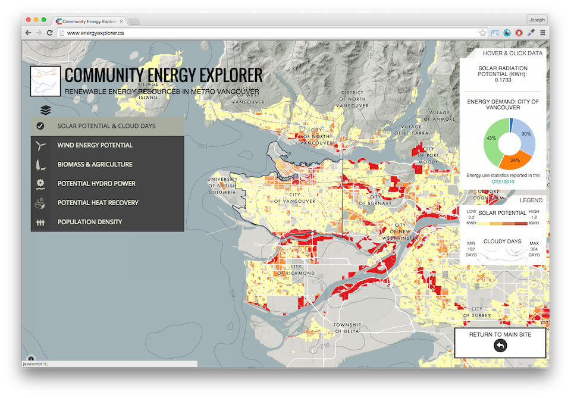
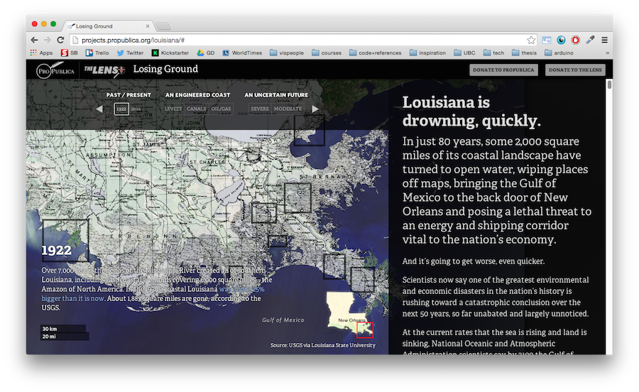
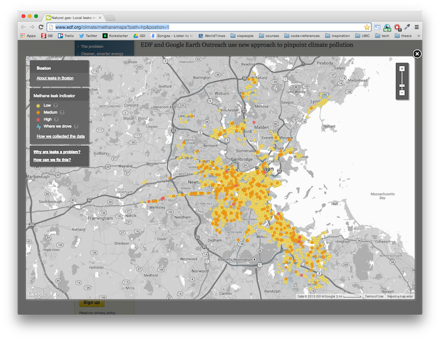
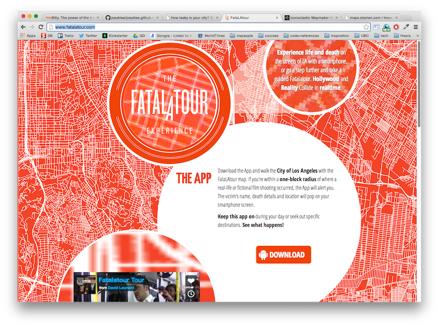
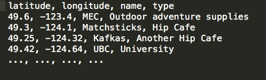

Hello Web Maps
First things first
Download the repo:
Hello Web Maps
Joey Lee
Street Creds:
UCLA (2012), MIT Senseable City Lab (2013)
MSc, UBC Department of Geography (2015)
Interests:
Critical Cartography | Creative Coding | Science communication
Why make interactive maps?
Interactive maps are powerful for visualization , presentation, sharing, and communication...
... and you can (ab)use the power of the web to allow exploration and enhance relevancy!
What are some tools?
Lot's out there, but some big ones:
- Tilemill / Mapbox & Mapbox.js / Turf.js
- Leaflet.js
- D3.js
- CartoDB
- Google Maps API
- Openlayers
We will focus on Tilemill and Mapbox today :)
Just a few example projects for motivation...
Boston 3-1-1 (2012)
Boston's 3-1-1 Maintenance Phone Calls
(My first Tilemill Project!)
HubCab (2014)
Hubcab: Exploring New York City taxi trails and sharing our way to a more sustainable urban future
Community Energy Explorer (beta)
Exploring Metro Vancouver Renewable Energy
Propublica: Losing Ground
Visualizing Louisiana's sinking places
Stamen's Methane Visualizer (2014)
How leaky is your city?
David Leonard's Fatalatour
Los Angeles's Gun Related Deaths
Before Getting Started
Computers are friends...
...and google searching is your best friend
*The answer to most (all?) of your questions are somewhere on the web!
What makes a web map ?
- 1. Maptiles*,
- 2.Geodata / Feature Layers
- 3. "The Web"
1.Maptiles *
*This isn't always the case, but for simplicity, let's just assume so :)
Maptiles
- "... web maps are made out of many small square images called tiles"
- "These tiles are typically 256x256 pixels and placed sided-by-side in order to create the illusion of a seamless image."
Maptiles

See: They are just little images cleverly stitched together!
Thanks @lyzidiamond & Mapbox for the info!
Oh! So that's how OpenStreetMap, GoogleMaps, and those slippy maps work?
Yeah!
Maptiles === MIND BLOWN
2. Feature Layers & Geodata
THE BEST STUFF EVER
Feature Layers
"Feature layers are map layers that live on top of your base tiles. Sometimes you can interact with them (clicking to produce a popup, for example). "
Geodata
Feature layers are typically geospatial datasets such as...
- GeoJSON
- Shapefiles
- KML
- CSV
GeoJSON, KML & Shapefiles

Imagine: Spreadsheet + Polygons in geospace
Probably your most common geospatial data types. We <3 geojson!
CSV (comma separated values)
Basically: Spreadsheet
Note: we can directly upload a .csv file into Tilemill if it includes columns with latitude & longitude coordinates
The cool thing is, we can render Feature layers as tiles or as vector (svg) depending on our needs, the sizes of our data, etc.
Today, we will render Feature Layers as Tiles
There are also things called "vector tiles" but we won't get into those today...
3. "The Web"
The Web
With web maps, the power to zoom, pan, toggle, click, drag, etc. comes from the friendly "web stack" of HTML, CSS, and Javascript and a variety of server technologies.
Shameless self promotion: Check out Tilehut.js to get started setting up your own tileserver!
The Web
While the web stack is indeed a magical combo, today let's not worry about those gritty details.
Instead, let's let Tilemill and Mapbox work their magic and help us build our first interactive web map.